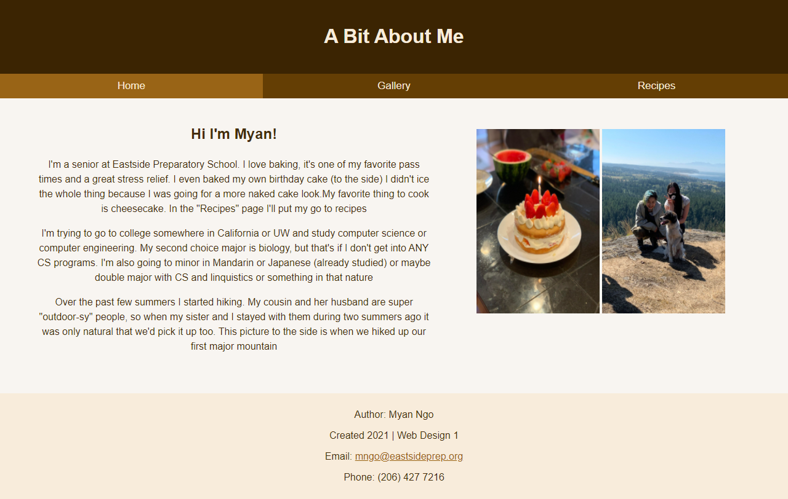
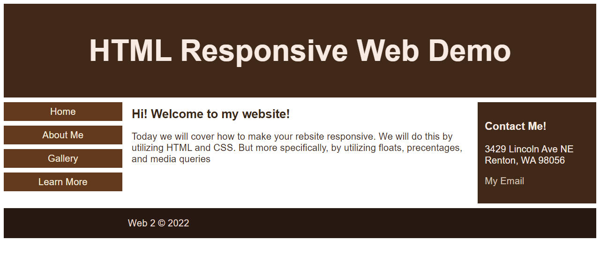

Web Design Portfolio
Home Page Facelift
For this project we had to revamp an existing home page. I chose the Exit 5 Korean BBQ home page.

What Do You Know
This was one of the first projects I did for web design 2. We had to make a website showcasing what we knew.
Client Group Project
This was the first group web design project I had done. We were tasked with revamping Redmond Dentistry's website (including their requests)

Food Blog
This was my final advanced web design seminar project. We were given the ability to do any website we wanted. I chose to make a food/recipe blog.
1950s Literature, Film, and Culture
This was my final project for my 1950s literature class. I made a blog format website with a culmination of my written works.

School Project Showcase
For this project we were instructed to showcase a school project. I chose to base it on my Medieval Literature manuscript project.

Page Improvement
For this project we had to chose a website and revamp it. I searched up the worst designed website and just modernized it.
Themed Webpage
For this project we needed to make a responsive landing page that was holiday themed. I chose to make a countdown to Christmas.

Halloween Project
For this project we were tasked to make a website all about Halloween! This is one of my earlier projects.

Better Designer
For this project we were asked "how to be a better designer?" This is one of my earlier projects.
Responsive Demo
This was just a demo to make our page responsive.
Video Background Demo
We had to find our own demo and implement it. I chose to make a responsive video background (used in the landing page)